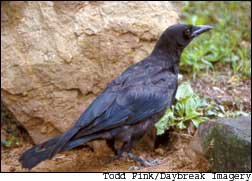
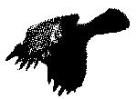
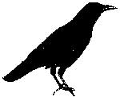

The trouble with crows is that they are so smart. Captive crows have proven capable of learning to mimic the human voice, match symbols with numbers and solve simple puzzles. As New York clergyman Henry Ward Beecher declared more than a century ago, “If men had wings and bore black feathers, few of them would be clever enough to be crows.”
Wild crows, on the other hand, sabotage gardens by collecting seeds, pecking into tomatoes or melons, or harvesting fruits a day or two ahead of humans. And crows’ winter roosting behavior is a budget-busting problem for many towns and cities, where thousands of crows often roost together to keep one another warm.
American crows (Corvus brachyrhynchos) are talkative, territorial and devoted to their families. And although they can be garden pests, they do have their positive side. Crows eat lots of insects, help clean up roadside carrion, and their domestic lives exemplify an enviable level of cooperation. Males and females work together to build nests, incubate eggs and feed their young, all the while participating in crow community life. Extended families often share summer territory, and when a good food supply is found, a sentinel crow often watches from a high tree while its relatives settle in for a feast
What can you do when the site of that feast is your garden? The old standby, the scarecrow, certainly has merit, but crows will quickly become accustomed to a scarecrow that never changes. For best results, construct a scarecrow with a post up its back so it can easily be moved from one spot to another. Every week or so, give your scarecrow a flashy makeover by attaching dangling metal pie tins, compact disks or other shiny, reflective objects to its arms or hat. Movement makes sharp-eyed crows nervous, so giving your scarecrow a helium-filled Mylar party balloon is a good idea, too
Crows hear well, so the The Fund for Animals Wildlife Rehabilitation Center suggests adding sound to your crow-control arsenal in the form of a portable radio. You don’t need to keep it on at night - crows stay in their roosts after dark - but during the daytime be sure to periodically change the station. Crows will notice a difference between smooth jazz and contemporary country; although no studies have been done on their listening preferences, it’s reasonable to expect that talk radio would put them on edge
Crows also are skittish around owl effigies and balloons designed to scare them, though again it’s best to plan a bit of movement into the scene. You can use bird flash tape made of reflective Mylar as a tail for a bobbing balloon, or mount an owl effigy atop a post that includes whirligig blades that spin in the wind. Many bird-scare devices truly look nightmarish, so you may need to strike a balance between their deterrence value and how much terror you can tolerate in your garden
Where crow pressure is modest, you may get good protection with reflective tape alone, which can be tied to posts, tomato cages or plant supports. In a small garden, try tying string or fishing line, spaced several feet apart, between tall posts installed along your garden’s edge, so they form a wide overhead grid. Wildlife biologists are not certain exactly how such strings work, but they theorize that when crows hit the lines they decide that the site is unsafe for feeding. If crow damage is limited to the birds pecking into ripening ears of corn, placing paper cups or paper bags over the ears after the silk turns brown often gives good protection. When pilfered seedlings are the main problem, protecting seedling beds with any type of barrier - from bird netting to an old upside-down shopping cart - may do the trick
In dire situations, you may need to use bird netting to declare large sections of your garden off limits. If they are hungry enough, crows will feed through netting that is draped directly over plants, but they can’t penetrate through to fruits and vegetables secured beneath a tent of bird netting
An energetic dog also will do the trick. In Barnardstown, Mass., organic grower Elaine Morley solved a serious crow problem by training Tasha, her black lab/border collie mix, to chase any crow that dared to enter her garden
With all of these crow-control measures, remember that early intervention is key. Once crows find a patch of watermelons, they will return each morning to peck on the rind a few times. All too often, the crows will throw an early morning watermelon party on the day when a melon is perfectly ripe.
And don’t make the mistake of trusting crows that are obviously watching your garden, but not actively causing damage. Proving that patience and wisdom go hand-in-hand, crows don’t mind waiting for weeks until grapes or pumpkins are perfect for picking. When you know crows are watching your garden, the most important thing you can do is to watch them back and use your intelligence to counter one of Mother Nature’s smartest animals.
Contributing editor Barbara Pleasant shares her home in the mountains of western North Carolina with three pairs of crows. Her Web site is www.barbara
pleasant.com
Cities and towns from Kansas to New York share a serious problem every winter. Murders (the name for a group of crows) - ranging from 1,000 to 75,000 individual crows - establish winter roosts in street-side trees, making a great ruckus and drenching cars and sidewalks with their droppings. Beyond being messy and odoriferous, the massive amount of droppings may pose a public health hazard.
But getting roosting crows to disperse is far from simple. Trained wildlife-control professionals typically use a combination of harassment techniques including pyrotechnics (exploding shells and firecrackers) and playing tapes of crow death cries and hawk screams at ear-splitting levels. To be effective, crow hazing campaigns must be conducted several days in a row in early evening or just before dawn, the times when crows are naturally mobile. But the plans can backfire when crows forced to abandon a roost next to the county courthouse find a new roost in trees around a church or school.
To avoid such failures, some towns spend thousands of dollars on crow-control specialists. One such firm, Bird Control International, uses a combination of trained hawks and falcons, broadcast distress calls, high-powered spotlights and pyrotechnics to move roosting crows to places where they can better wait out the winter
As the saying goes, “eating crow” means enduring a humiliating experience. The story behind the phrase dates back to the War of 1812, when an American hunter shot a crow behind British lines. To disgrace the hunter, a British officer made the hunter eat some of the crow. Later, the tables turned when the hunter regained his musket and forced the Brit to finish off the bird. Crow tastes terrible, largely due to the birds’ eclectic diets. Crows eat more than 600 different foods, and one-third of their diet consists of animal matter. To carnivorous crows, rotting possum carcasses are as delectable as grasshoppers, spiders, frogs or the corn seed you plant in your garden
Compared to the clear “caw caw” of a crow, ravens have croakier voices, and they tend to be larger birds, with bodies up to 26 inches long compared to crows’ average length of 17 to 21 inches. All three species of raven native to North America can be distinguished from crows by their broad, wedge-shaped tails (as opposed to fan-shaped) and their flight patterns. Crows may glide from one nearby tree to another, but while in open flight, they always flap their wings. Ravens, in comparison, soar and glide like hawks. Ravens also live twice as long as crows, often surviving for up to 15 years in the wild
If you can’t find reflective tape, bird netting or other crow-scaring equipment through a local source, the following mail-order companies sell many interesting devices - from fake owls that hoot and swivel their heads to spooky-looking, motion-activated sprinklers.
Biocontrol Network
(800) 441-2847
www.biconet.com
Gempler’s
(800) 382-8473
www.gemplers.com
Margo Supplies (Canada)
(403) 652-1932
www.margosupplies.com
Peaceful Valley Farm Supply
(888) 784-1722
www.groworganic.com
To read crow-scaring tips from Mother’s Archive, go to www.MotherEarthNews.com and search for “crows.”
|
 |
 |
|
|
 |
|
|